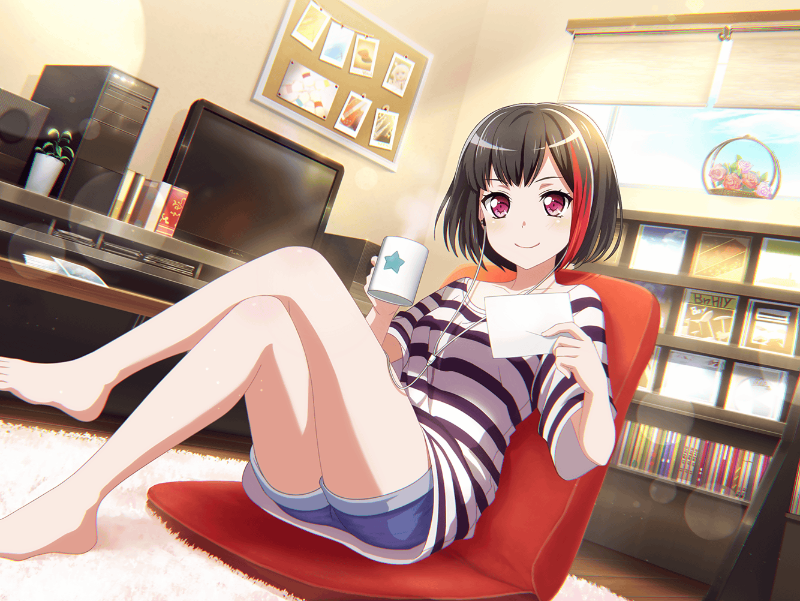

練習スタジオ
モカ
ふいー、疲れた～
つぐみ
モカちゃん、お疲れさま
モカ
お疲れー。
……って、あれ？ ひーちゃんとトモちんは～？
つぐみ
ふたりとも、外に飲み物買いに行ったよ
モカ
そっかー。蘭は……
蘭
――♪
モカ
まだ歌ってるんだ
つぐみ
うん。
声掛けたんだけど、もうちょっと練習するって
つぐみ
でも、蘭ちゃん朝からずっと歌ってるんだよね。
スタジオに来たのだって、１番早かったし……
喉、大丈夫かなぁ……
モカ
んー、さすがにそろそろ休んだほうがいいよね～
モカ
蘭ー。いい加減休憩しようよ～
蘭
あたしはいい
モカ
よくないって～
つぐだって心配してるよ？
喉に負担掛けて、声出なくなったらどうするの～？
つぐみ
そ、そうだよ！
蘭ちゃん、休憩も練習のうちだよ！
モカ
蘭〜。つぐのこのツグりっぷりを見習ってよね〜？
つぐみ
……蘭ちゃん、がんばって休憩しようっ！
蘭
……はぁ、わかった
つぐみ
ひまりちゃん、蘭ちゃんの飲み物も買ってくるって
蘭
そう
つぐみ
蘭ちゃん、すごく集中してたね。
同じところ、何回も何回も歌って……
蘭
なんか引っかかるところがあって。
なかなか上手くいかないんだよね
つぐみ
う～ん……
つぐみ
あっ！
それなら、もうちょっと笑顔で歌ってみるのはどうかな？
つぐみ
アップテンポで明るい感じの曲だし、
表情から変えてみるのもいいかも！
蘭
いきなり笑顔って言われても……
つぐみ
ほら、あの時の笑顔だよ！
この間みたいなさ！
モカ
あの時？ この間？
……もしかして、つぐが言ってるのって、
みんなで、初めて録音したＣＤを聴いた時のこと～？
つぐみ
うん！
あの時の蘭ちゃん、うれしそうに笑ってたよね
モカ
あー、たしかにそうだったかも。
蘭が珍しく素直だったもんね〜
モカ
『この曲も、みんなも……あたしの誇り。これからも、ずっとね』
蘭
ちょっ、モカ！
モカ
そんなに照れなくてもいいじゃん。
みんな、蘭が笑ってて喜んでたのに～
蘭
別に照れてないっ……！
モカ
怒ってる顔より、笑ってる顔のほうが可愛いよー？
蘭
～～～～！
つぐみ
ま、まあまあ、蘭ちゃん落ち着いて？
つぐみ
モカちゃんも、
蘭ちゃんを怒らせるようなこと言ったらダメだよ
モカ
そういうつぐだって、嬉しかったくせに～
つぐみ
それは……
つぐみ
……うん。
私も蘭ちゃんの気持ちが聞けて、うれしかったな
蘭
つぐみまで……
モカ
いつもあれくらい素直ならいいのにねー。
あ、素直だったら蘭じゃないか～
蘭
…………
つぐみ
も、モカちゃん。ダメだよ、それ以上は
モカ
はーい
つぐみ
でも……さっきのモカちゃんじゃないけど、
蘭ちゃんは可愛いんだから、もっと笑ったほうがいいと思う！
つぐみ
私はあの曲、蘭ちゃんが笑顔で歌ってくれたら嬉しいな
蘭
…………
つぐみ
みんなもそう思ってるはずだよ。
ね、モカちゃん？
モカ
うんうん、そうだねー
蘭
……そろそろ練習に戻ろう
つぐみ
ええっ！？
ひまりちゃんと巴ちゃんまだ戻って来てないよ？
蘭
いいから。ほら、やるよ
つぐみ
ちょっ、ちょっと蘭ちゃん！？ 待ってよ～
モカ
あーあ、蘭ってば、
まーたわかりやすい照れ隠しだな～